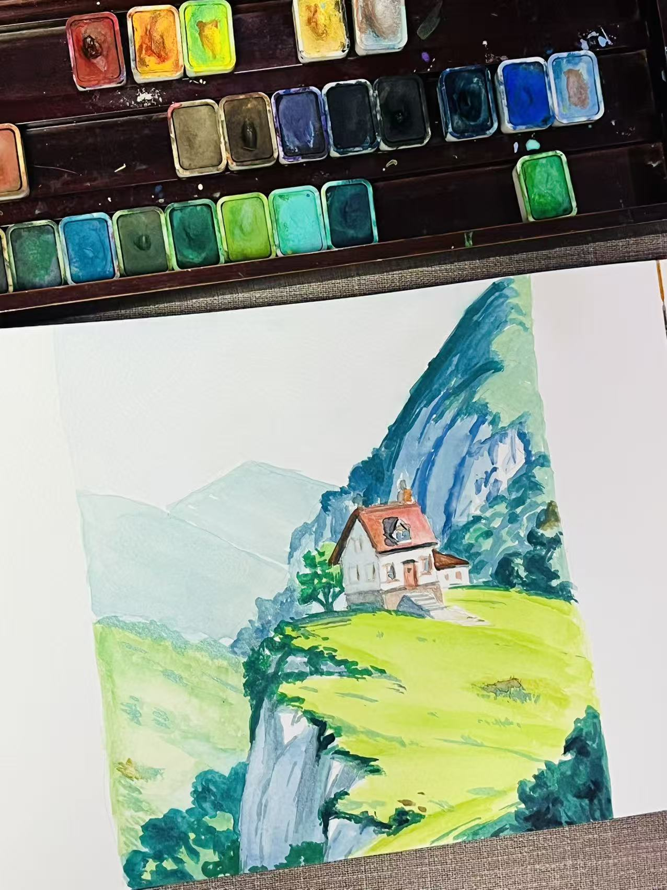
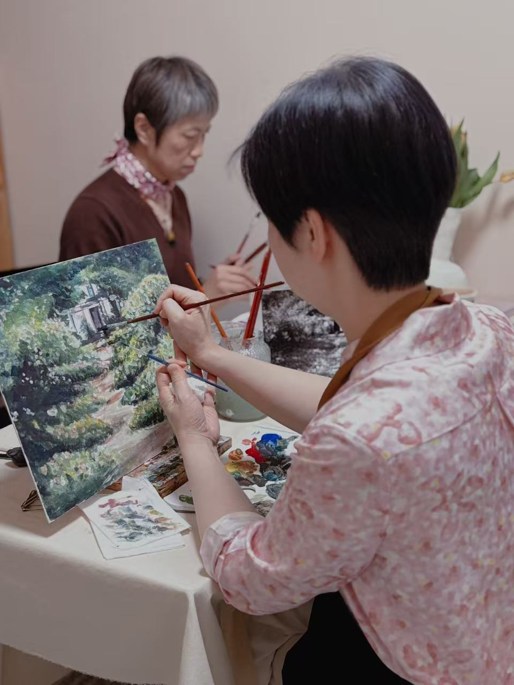
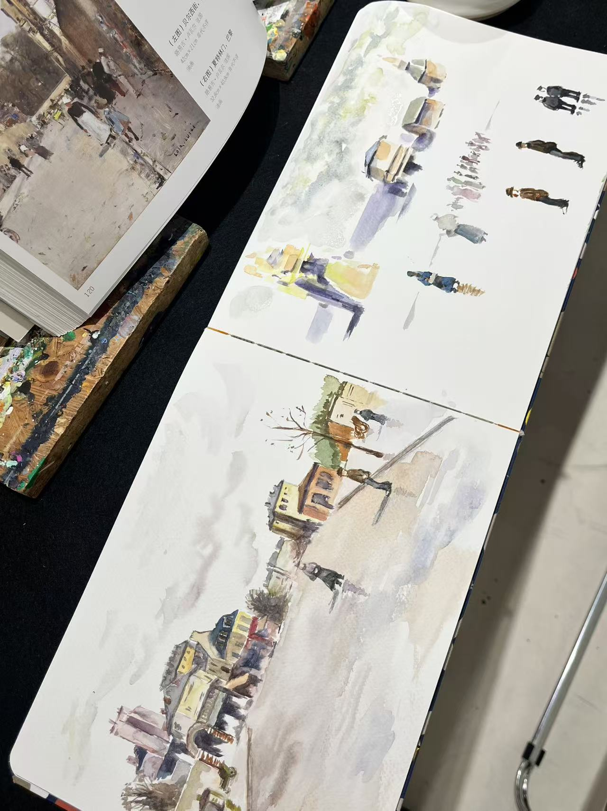
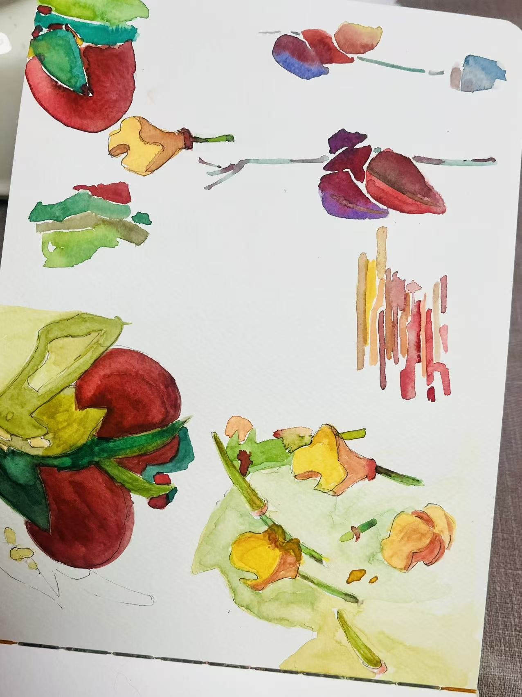

观看
她从枝干、叶组、器皿、山体和房屋之间寻找结构关系，而不是停留在局部描摹。

她在写生训练中开始提取结构、色键和空间层次，让水彩不只是记录对象，而成为组织观看的方法。
Yan Ning 的进步集中体现在写生判断上：她开始从复杂现场里提炼结构关系、主色关系和空间节奏。
她从枝干、叶组、器皿、山体和房屋之间寻找结构关系，而不是停留在局部描摹。
她能够把黄、绿、蓝、褐等主色关系提取出来，让颜色成为组织空间的工具。
她把山体、天空、房屋和前景概括为清晰块面，画面开始拥有更稳定的空间层次。
这组索引展示她如何在同一训练线索中处理植物结构、色彩提取与风景空间。



KART 以美术馆的方式保存一个人的变化：让练习中的判断、选择和转译变得可见。
写生在这里不只是面对对象，而是从复杂现场里提取结构、色键和观看路线。
Yan Ning 的画面开始出现一种更清晰的组织意识：她不再只是把看见的东西完整放进去，而是在判断哪些关系决定画面成立。